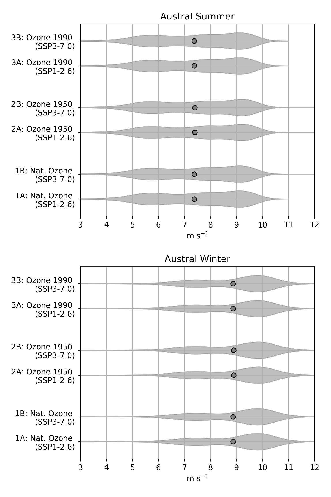

class: center, middle .title[Understanding the Changing Role of Stratospheric Ozone in Modifying the Southern Ocean Wind Structure] <!-- .subtitle[] --> .author[Tereza Jarníková, David Willis, Steven Rumbold, Colin Jones, Corinne Le Quéré] <br/> .institution[RoSES, ORCHESTRA and ENCORE Annual Science Meeting] <br/> .institution[University of East Anglia] <br/> .date[July 12, 2022] <br/> <br/> --- name: background class: center ##Background (draft) -xx - find appropriate illustratory figure - Thomson 2011? <br/> -ODS > vertical temperature structure > change in wind shear > change in windspeed / distribution, esp in summer --- name: background class: center ##Broader Research Objective (draft) -run 6 ozone and SSP scenarios to untangle role of ozone and greenhouse gas emission in warming and windspeed increases and resultant changes in SO carbon cycling --- name: background class: center ##Guiding Questions <br/> <br/> 1. How do changes in Southern Ocean wind patterns in the Met Office ESM-derived wind product compare to those in ERA5 and NCEP? <br/> <br/> 2. How are the Southern Ocean wind patterns and temperature distributions projected to change over the coming century under different ozone and SSP scenarios? --- name: model class: center ##Part 1: about the Hadley ESM model xx-consult with Steve. highlight colleagues from Hadley centre, representative model image --- name: model class: center ##Part 1: Comparing Met Office Windspeeds and Temperatures with ERA5 and NCEP products xx-consult with Steve. highlight colleagues from Hadley centre, representative model image --- name: background class: center ##Model Scenarios <br/> <img style="width:70%" src="./figs_2022_JUL_CELOS/sspdesc.png"> <br/> --- name: background class: center ##Southern Ocean Wind Climatology: 1940-1960 <img style="width:47%" src="./figs_2022_JUL_CELOS/wspd_1940-1960.jpg"> <br/> words --- name: background class: center ##Southern Ocean Wind Climatology: 1940-1960  <br/> words --- name: background class: center ##Southern Ocean Wind Climatology: 2010-2030 <img style="width:47%" src="./figs_2022_JUL_CELOS/wspd_2010-2030.jpg"> <br/> words --- name: background class: center ##Southern Ocean Wind Climatology: 2040-2060 <img style="width:47%" src="./figs_2022_JUL_CELOS/wspd_2040-2060.jpg"> <br/> words --- name: background class: center ##Southern Ocean Wind Climatology: 2080-2100 <img style="width:47%" src="./figs_2022_JUL_CELOS/wspd_2080-2100.jpg"> <br/> words